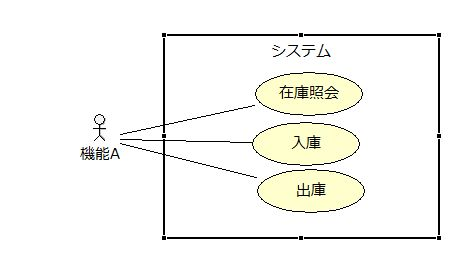

純粋に言語仕様的な側面で見た場合、インタフェースとは定数フィールドとメソッドのシグネチャ（メソッド名、戻り値の型および引数のみが定義された状態）のみを定義したものになりますが、なぜこのようなものが必要になるのかよく分からないという人も多いと思います。そもそもインタフェースとは界面を意味しており、この界面とはあるものと別のあるものが接する面のことで、オブジェクト指向ではオブジェクトと別のオブジェクトが接する面となっているという解釈が成り立ちます。ですが、この様な解釈はインタフェースというものに対する理解を難しくしています。
単純に言って、オブジェクト指向におけるインタフェースとはあるオブジェクトと他のオブジェクトの間の契約です。契約に従う（インタフェースを実装する）ことを宣言したクラスから生み出されるオブジェクトは契約に定められたメソッドを外部に公開する義務を負います。
インタフェースがオブジェクトとオブジェクトの間の契約だということは分かりましたが、何故わざわざこのような面倒な仕組みがあるのでしょうか。別にインタフェースを介さずとも他のオブジェクトが公開するメソッドは呼び出し可能ですし、インタフェースの有無によって結果が変わることもありません。一見、インタフェースなど不要に思えます。何故このような仕組みが存在するのでしょうか。少し例を挙げて考えてみましょう。
図を見てください。従業員オブジェクトは会社オブジェクトに公開すべきインタフェースと顧客オブジェクトに公開するインタフェースを実装しています。これはつまり、顧客と従業員との間の契約と従業員と会社との間の契約の2つが存在することを意味しています。顧客と従業員の間の商品販売契約には「商品を販売する」メソッドが定義されていることでしょう。一方で会社と従業員との間の雇用契約には「転属する」、「昇格する」、「給与を支払う」といったメソッドが定義されるでしょう。
もし従業員オブジェクトが無契約（何のインタフェースも実装していない状態）だったら、顧客オブジェクトも「昇格する」メソッドや「給与を支払う」メソッドを呼び出し可能ということになってしまいます。無論、顧客オブジェクトにそのようなメソッドの呼び出しを許容すべきではありませんし、その必要性もありません。
また顧客オブジェクトから見た場合、自分が商品を購入することができるかどうかは従業員オブジェクトの実装に依存するということになります。本来は顧客オブジェクトは従業員オブジェクトの実装とは無関係に商品を購入できるべきです。これはつまり、あるオブジェクトが他のオブジェクトに何かを頼む時（他のオブジェクトのメソッドを呼び出す時）、そのオブジェクトの実装に依存するのではなく契約（インタフェース）に依存すべきということです。この考えを更に推し進めると、顧客にとっては商品販売契約に従ってさえいれば、相手が従業員オブジェクトである必要すらありません。
顧客オブジェクトが従業員オブジェクトではなく商品販売契約に依存するということは、顧客オブジェクトから見ると従業員オブジェクトは商品販売契約に従う「何か」に過ぎないということです。
更に言うと、顧客オブジェクトから見てこの「商品販売契約に従う何か」は別の「商品販売契約に従う何か」に交換可能です。例えば、「商品を販売する」メソッドが呼び出された際に、顧客の購入履歴も作成したいとなった場合、以下の図のように顧客情報を管理する顧客係オブジェクトを商品販売契約に従わせることによって、「商品を販売する」メソッドは、「商品を販売するとと同時に顧客の購入履歴を記録する」メソッドに簡単に拡張することができるようになります。
このような手法を、販売係オブジェクトが提供する「商品を販売する」メソッドの動作を損なうことなく、新たに「顧客の購入履歴を記録する」という機能を付け加える（デコレートする）ことができることから、デコレーターパターンといいます。このようにメソッドの呼び出し側のオブジェクトは特定のオブジェクトではなく契約に依存することによって、デコレーターにより容易に機能を拡張することができるようになります。デコレーターパターンの要点は、顧客オブジェクトは顧客係オブジェクトと販売係オブジェクトを（どちらも同じように商品販売契約に従っているため）同一視することができるという点にあります。
デコレーターは元の機能を修正することなく別のオブジェクトによって新たな機能を付け加えることができる点で非常に優れたデザインパターンです。実際のシステム開発の現場でも充分にテストされたクラスを修正することは非常にリスクの高い行為です。デコレーターパターンでは元の機能を修正しませんから、新たにデコレートした機能だけをテストすれば良いということになります。このように完成済みのクラスに機能を付け足したい場合は、そのクラスそのものを修正するのではなく、継承やデコレーターを使って拡張すべきという考え方を「開放／閉鎖の原則」といいます。これは、クラスは修正に対して「閉鎖」し、拡張に対して「開放」すべきであるという意味です。
あるオブジェクトAとAを利用している（Aが公開しているメソッドを呼び出している）オブジェクトBの関係性を考える時、AとBの間で結ばれるべき契約はどのようなものかという観点を持つことは非常に重要です。AとBの間に契約が存在することによって、Bは契約に従うものであれば誰でもAと同一視することができます。こうなると、Bにとって必要なのはAではなく、「契約に従う何か」ということになります。以下の図を見てください。
オブジェクトBは「在庫問合せ」、「入庫処理」、「出庫処理」の3つの機能を欲しています。これをユースケースといいます。Bが望む契約は「在庫問合せ」、「入庫処理」、「出庫処理」という3つの機能を備えていることです。これをどのようなクラスに実装するかはBには関係ありません。このことをシステムを構成する全ての機能に拡大して考えると、全ての機能が要求するユースケースを洗い出すことができれば、システムに登場すべきインタフェースを全て定義することができるということにつながります。クラスは1つ以上のインタフェースを実装することができますから、洗い出した全てのインタフェースから性格の似たものを集めて1つのクラスで実装するという手順でクラスの設計が可能となります。従って、明らかにインタフェース設計はクラス設計に先んじて実施されるべきです。
UMLにユースケース図というものがありますが、ユースケース図の作成は基本設計の最初期の段階（あるいは要件定義工程）で実施されるのが普通です。つまり、インタフェース設計はシステム開発の最初期の段階で既に実施可能ということになります。
ユースケース図では、（「在庫照会」、「入庫」、「出庫」のような）1つ1つの要件をユースケース、ユースケースを要求するものをアクターといいます。